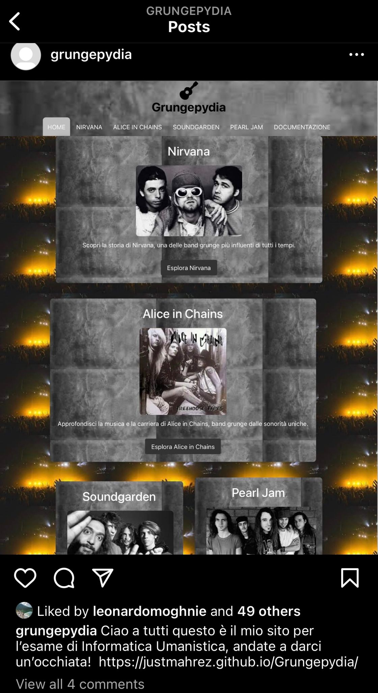
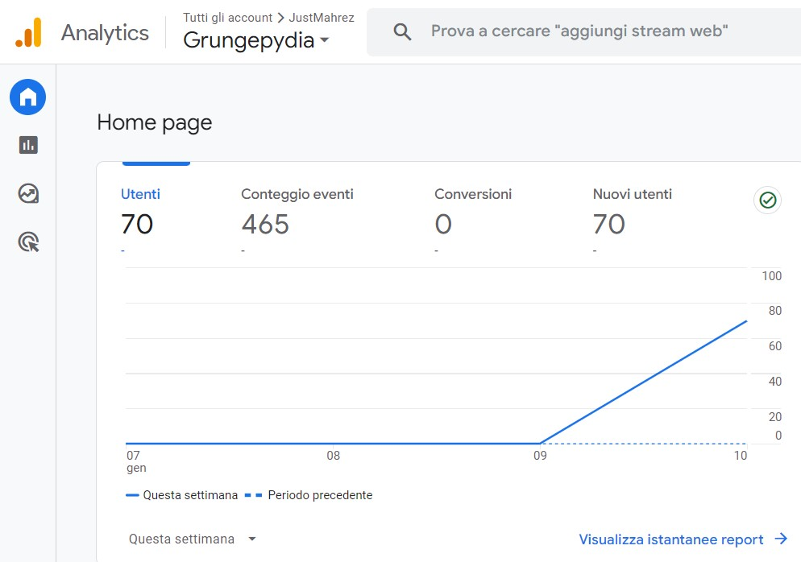

Grungepydia - Esplorando il Mondo del Grunge
Grungepydia è un portale dedicato agli appassionati della musica grunge movimento musicale degli anni '90. L'obiettivo principale del sito è offrire una risorsa completa e informativa su band iconiche come Nirvana, Alice in Chains, Soundgarden e Pearl Jam. Il target principale di Grungepydia sono gli amanti della musica alternativa, giovani e adulti che condividono una passione per il grunge. Il sito offre biografie, analisi approfondite dei top 3 album e una galleria video, creando così un ambiente coinvolgente per gli utenti desiderosi di esplorare e capire meglio l'eredità di queste band. I valori aggiunti di Grungepydia includono un “grungesque” design e un'esperienza utente ottimizzata su diverse piattaforme. La navigazione intuitiva consente agli utenti di accedere facilmente a informazioni esaustive e di immergersi nella storia del grunge. Il sito si propone di mantenere viva la fiamma della cultura, fornendo contenuti rilevanti per gli appassionati di tutte le generazioni.
Benchmarking
1. Obiettivi: L’obiettivo di Grungepydia è creare un sito web che celebra il movimento grunge, offrendo informazioni dettagliate sugli artisti principali, collegando i loro successi migliori ad altre piattaforme per vivere al meglio l’esperienza.
2. Target Utente: Questo sito è indirizzato verso un ampio target utente, con una fascia d’età che parte dagli adolescenti fino ad arrivare ad individui di 50 anni, ma ancora più in generale il sito è per chi prova interesse per questo genere di musica.
3. Competitors: I competitors di questo sito sono i siti ufficiali delle singole band e i loro fan-websites, ma non vi è un sito unico che raggruppa informazioni per tutti e quattro i gruppi. La particolarità di Grungepydia infatti è la sua unicità nell’avere a disposizione una piccola enciclopedia per tutti i maggiori esponenti del genere grunge.
Le scelte grafiche rilevanti per il sito sono: il font “Roboto” utilizzato per i titoli, mentre quello usato per il testo principale è quello predefinito del browser; le palette colori predominante caratterizzata da tonalità scure, con sfondi e sezioni di colore nero/grigio scuro. Il testo , spesso bianco o in tonalità chiare per garantire una buona leggibilità; le immagini di sfondo, che sono appunto sfondi tematici grunge che enfatizzano lo stile dell’omonimo movimento; l’icona dalla libreria Fontawesome usata nell’intestazione; le immagini dell’album, visualizzate con uno stile circolare per una presentazione uniforme e infine il framework Bootstrap utilizzato per garantire una struttura responsive.
1. Linguaggi utilizzati: Html; Css;
2.Strumenti: Bootstrap per la grafica, template html esistente per il carousel, spotify per i link e video scaricati da youtube per la Video Gallery.
1.Background:Non essendoci siti simili, i veri pro del sito sono la navigazione intuitiva, l’aspetto accattivante caratteristico del movimento, la velocità di caricamento del sito e i contenuti informativi sulla musica e le band associate.
2. Obiettivi Comunicativi: Grungepydia ha come obiettivo principale creare una piattaforma online dedicata al genere grunge e alle sue band iconiche, offrendo un'esperienza coinvolgente per gli appassionati e i nuovi interessati. Il sito mira a promuovere il genere, ponendosi l'obiettivo di raggiungere almeno 20 like a un post su Instagram e il raggiungimento di 50 visite al sito web.
3.Target Audience e Messaggio:Il sito si rivolge principalmente agli appassionati di musica grunge, compresi i fan delle band iconiche del genere. Il target demografico principale sono gli utenti under 40 con un interesse specifico per la cultura grunge. Il sito utilizza principalmente canali online, come i motori di ricerca e i social media, per raggiungere il suo pubblico. Il sito trasmette il messaggio di essere una risorsa completa e coinvolgente per gli amanti della musica grunge, offrendo informazioni dettagliate e un'esperienza multimediale.
La promozione è stata condotta mediante il passaparola con amici e conoscenti
Per misurare il successo viene controllato il numero di accessi e la durata all’interno del sito da parte dell’utente, inoltre per tenere traccia dei movimenti viene utilizzato Google Analytics.
 